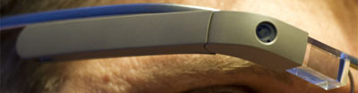

Clique sobre as Áreas destacadas em vermelho

De acordo com fontes próximas do Google, os óculos vÃo contar com uma pequena tela de LCD ou AMOLED na parte superior e em frente aos olhos do usuário. Com o uso de uma camera e GPS, você pode se situar, assim como selecionar opções com o movimento da cabeça.


Com o Google Glass sera¡ possivel tirar fotos com até 5 megapixels e gravar videos com 720 linhas de resolução. Os primeiros videos e fotos capturados com o aparelho já começaram a circular pela rede, mas até agora ninguem tem muitas informaçoes técnicas.
Quem pensa que para comandar o Google Glass vai precisar de teclado e mouse, se engana redondamente. O dispositivo vem com vários tipos de sensores e microfones embutidos. Assim, para dar um comando, basta falar ou passar o dedo na lateral do Óculos.

Segundo a própria Google, o Glass viram com uma bateria que tem autonomia suficiente para durar um dia inteiro. Apenas algumas atividades como videoconferências e longas filmagens vÃo exigir um pouco mais. Alem disso ele vem com WiFi, Bluetooth, 3G/4G e muito mais.